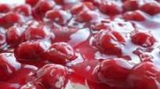

Quick and Scrumptious Cheesecake

Ingredients
- 2 packages cream cheese
- 1 carton whipping cream
- 2 table spoons sugar
- 5 table spoons butter
- 1 box crushed graham crackers
- 2 cans cherry pie filling
Instructions
- Add the craham cracker to a large baking tray
- Melt the butter and mix in into the graham crackers
- Bake graham crackers at 350 for 20 minutes
- Whisk the cream and sugar together until texture thickens
- Add the cream cheese to your mixture and whisk until smooth
- Let graham crackers cool and add cream cheese filling
- Add cherry pie filling to top
- Consume
Return